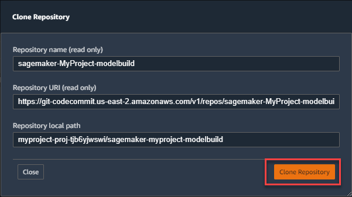
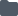
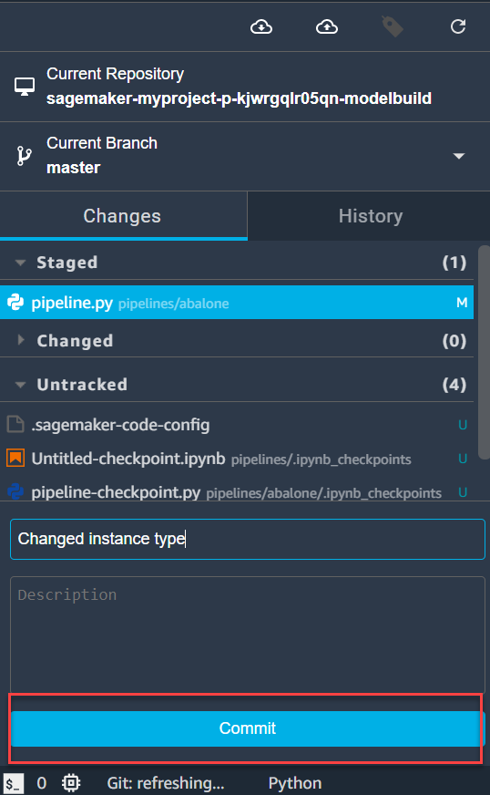

SageMaker MLOps Project Walkthrough
This walkthrough uses the template MLOps template for model building, training, and deployment to demonstrate using MLOps projects to create a CI/CD system to build, train, and deploy models.
Prerequisites
To complete this walkthrough, you need:
-
An IAM account or IAM Identity Center to sign in to Studio. For information, see Onboard to Amazon SageMaker Domain.
-
Permission to use SageMaker-provided project templates. For information, see SageMaker Studio Permissions Required to Use Projects.
-
Basic familiarity with the Studio user interface. For information, see Amazon SageMaker Studio UI Overview.
Topics
Step 1: Create the Project
In this step, you create a SageMaker MLOps project by using a SageMaker-provided project template to build, train, and deploy models.
To create the SageMaker MLOps project
-
Sign in to Studio. For more information, see Onboard to Amazon SageMaker Domain.
-
In the Studio sidebar, choose the Home icon (
 ).
). -
Select Deployments from the menu, and then select Projects.
-
Choose Create project.
The Create project tab appears.
-
If not selected already, choose SageMaker templates, then choose MLOps template for model building, training, and deployment.
-
For Project details, enter a name and description for your project.
When the project appears in the Projects list with a Status of Create completed, move on to the next step.
Important
As of July 25, 2022, we require additional roles to use project templates. If you see the error message CodePipeline is not authorized to perform AssumeRole on role arn:aws:iam::xxx:role/service-role/AmazonSageMakerServiceCatalogProductsCodePipelineRole, see Steps 5-6 of SageMaker Studio Permissions Required to Use Projects for a complete list of required roles and instructions on how to create them.
Step 2: Clone the Code Repository
After you create the project, two CodeCommit repositories are created in the project. One of the repositories contains code to build and train a model, and one contains code to deploy the model. In this step, you clone the repository to your local SageMaker project that contains the code to build and train the model to the local Studio environment so that you can work with the code.
To clone the code repository
-
In the Studio sidebar, choose the Home icon (
). -
Select Deployments from the menu, and then select Projects.
-
Select the project you created in the previous step to open the project tab for your project.
-
In the project tab, choose Repositories, and in the Local path column for the repository that ends with modelbuild, choose clone repo....
-
In the dialog box that appears, accept the defaults and choose Clone repository.
When clone of the repository is complete, the local path appears in the Local path column. Choose the path to open the local folder that contains the repository code in Studio.
Step 3: Make a Change in the Code
Now make a change to the pipeline code that builds the model and check in the change to initiate a new pipeline run. The pipeline run registers a new model version.
To make a code change
-
In Studio, choose the file browser icon (  ), and navigate to the
pipelines/abalonefolder. Double-clickpipeline.pyto open the code file. -
In the
pipeline.pyfile, find the line that sets the training instance type.training_instance_type = ParameterString( name="TrainingInstanceType", default_value="ml.m5.xlarge"Change
ml.m5.xlargetoml.m5.large, then typeCtrl+Sto save the change. -
Choose the Git icon ( ). Stage, commit, and push the change in
pipeline.py. Also, enter a summary in the Summary field and an optional description in the Description field. For information about using Git in Studio, see Clone a Git Repository in SageMaker Studio.
After pushing your code change, the MLOps system initiates a run of the pipeline that creates a new model version. In the next step, you approve the new model version to deploy it to production.
Step 4: Approve the Model
Now you approve the new model version that was created in the previous step to initiate a deployment of the model version to a SageMaker endpoint.
To approve the model version
-
In the Studio sidebar, choose the Home icon (
). -
Select Deployments from the menu, and then select Projects.
-
Select the name of the project you created in the first step to open the project tab for your project.
-
In the project tab, choose Model groups, then double-click the name of the model group that appears.
The model group tab appears.
-
In the model group tab, double-click Version 1. The Version 1 tab opens. Choose Update status.
-
In the model Update model version status dialog box, in the Status dropdown list, select Approve, then choose Update status.
Approving the model version causes the MLOps system to deploy the model to staging. To view the endpoint, choose the Endpoints tab on the project tab.
(Optional) Step 5: Deploy the Model Version to Production
Now you can deploy the model version to the production environment.
Note
To complete this step, you need to be an administrator in your Studio domain. If you are not an administrator, skip this step.
To deploy the model version to the production environment
-
Log in to the CodePipeline console at https://console.aws.amazon.com/codepipeline/
-
Choose Pipelines, then choose the pipeline with the name sagemaker-
projectname-projectid-modeldeploy, whereprojectnameis the name of your project, andprojectidis the ID of your project. -
In the DeployStaging stage, choose Review.
-
In the Review dialog box, choose Approve.
Approving the DeployStaging stage causes the MLOps system to deploy the model to production. To view the endpoint, choose the Endpoints tab on the project tab in Studio.
Step 6: Clean Up Resources
To stop incurring charges, clean up the resources that were created in this walkthrough. To do this, complete the following steps.
Note
To delete the AWS CloudFormation stack and the Amazon S3 bucket, you need to be an administrator in Studio. If you are not an administrator, ask your administrator to complete those steps.
-
In the Studio sidebar, choose the Home icon (
). -
Select Deployments from the menu, and then select Projects.
-
Select the target project from the dropdown list. If you don’t see your project, type the project name and apply the filter to find your project.
-
You can delete a Studio project in one of the following ways:
-
You can delete the project from the projects list.
Right-click the target project and choose Delete from the dropdown list.
Note
This functionality is supported in Studio version v3.17.1 or higher. For more information, see Shut down and Update SageMaker Studio.
-
You can delete a project from the Project details section.
-
When you've found your project, double-click it to view its details in the main panel.
-
Choose Delete from the Actions menu.
-
-
-
Confirm your choice by choosing Delete from the Delete Project window.
This deletes the Service Catalog provisioned product that the project created. This includes the CodeCommit, CodePipeline, and CodeBuild resources created for the project.
-
Delete the AWS CloudFormation stacks that the project created. There are two stacks, one for staging and one for production. The names of the stacks are sagemaker-
projectname-project-id-deploy-staging and sagemaker-projectname-project-id-deploy-prod, whereprojectnameis the name of your project, andproject-idis the ID of your project.For information about how to delete a AWS CloudFormation stack, see Deleting a stack on the AWS CloudFormation console in the AWS CloudFormation User Guide.
-
Delete the Amazon S3 bucket that the project created. The name of the bucket is sagemaker-project-
project-id, whereproject-idis the ID of your project.